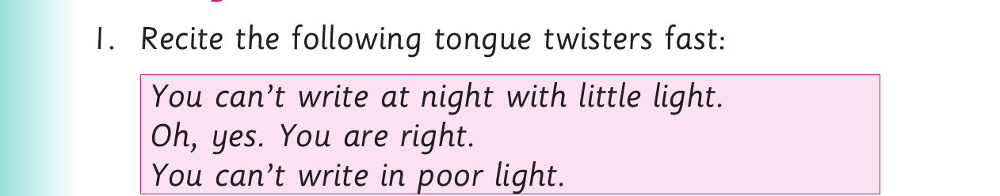
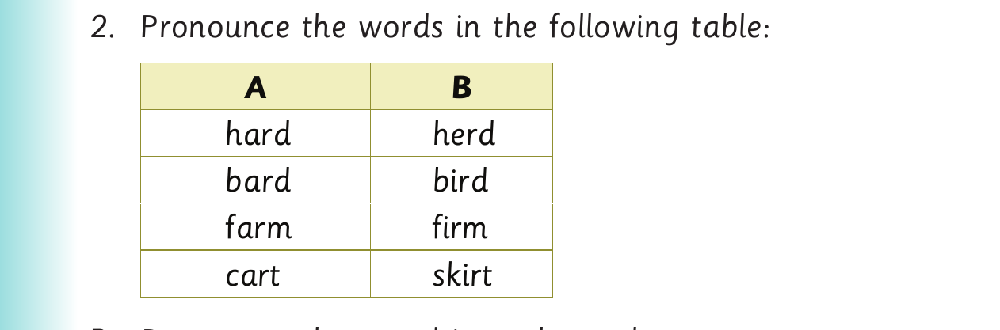

I pronounce words with long vowel sounds
I pronounce words with long vowel sounds.
Activity 1

1. Recite the following tongue twisters fast: You can’t write at night with little light. Oh, yes. You are right. You can’t write in poor light.

2. Pronounce the words in the following table: A B hard herd bard bird farm firm cart skirt
3. Pronounce the vowel in each word. 4. Read the following sentences aloud: (a) The herd gave him a hard time. (b) A bard writes poems on birds. (c) The fence near the farm is firm. (d) He carried new skirts in a cart.